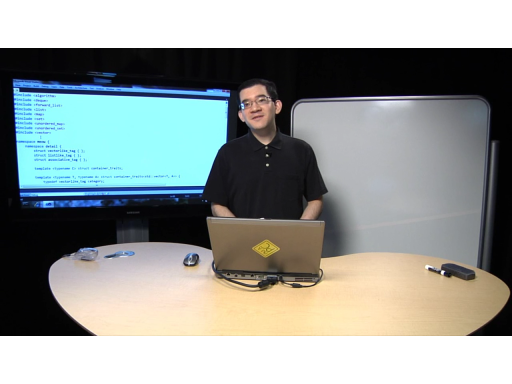

Learn all about the Standard Template Library (STL) from the great Stephan T. Lavavej (STL), Microsoft's keeper of the STL cloth (this means he manages the partnership with the owners of STL and Micr…
C9 Lectures: Stephan T. Lavavej - Standard Template Library (STL), 1 of n[MP4] [2010/07/01]Welcome to another installment of C9 Lectures. In the following series, learn all about STL from the great Stephan T. Lavavej, Microsoft's keeper of the STL cloth (this means he manages the partnershi…
C9 Lectures: Stephan T. Lavavej - Standard Template Library (STL), 2 of n[WMV] [2010/07/22]Welcome to another installment of C9 Lectures covering the powerful general C++ library, STL. The great Stephan T. Lavavej, Microsoft's keeper of the STL cloth (this means he manages the partn…
C9 Lectures: Stephan T. Lavavej - Standard Template Library (STL), 3 of n[WMV] [2010/08/13]Welcome to another installment of C9 Lectures covering the powerful general C++ library, STL. Joining us once again is the great Stephan T. Lavavej, Microsoft's keeper of the STL cloth (this m…
C9 Lectures: Stephan T. Lavavej - Standard Template Library (STL), 4 of n[WMV] [2010/09/08]Welcome to another installment of C9 Lectures covering the powerful general C++ library, STL. Joining us once again is the great Stephan T. Lavavej, Microsoft's keeper of the STL cloth (this m…
C9 Lectures: Stephan T. Lavavej - Standard Template Library (STL), 5 of n[MP4] [2010/09/17]Welcome to another installment of C9 Lectures covering the powerful general C++ library, STL. Joining us once again is the great Stephan T. Lavavej, Microsoft's keeper of the STL cloth (this m…
C9 Lectures: Stephan T. Lavavej - Standard Template Library (STL), 6 of n [WMV] [2010/10/14]
[WMV] [2010/10/14]Welcome to another installment of C9 Lectures covering the powerful general C++ library, STL. Joining us once again is the great Stephan T. Lavavej, Microsoft's keeper of the STL cloth (this m…
C9 Lectures: Stephan T. Lavavej - Standard Template Library (STL), 7 of n[WMV] [2010/10/23]Welcome to another installment of C9 Lectures covering the powerful general C++ library, STL. Joining us once again is the great Stephan T. Lavavej, Microsoft's keeper of the STL cloth (this m…
C9 Lectures: Stephan T. Lavavej - Standard Template Library (STL), 8 of n[MP4] [2010/11/17]Welcome to another installment of C9 Lectures covering the powerful general C++ library, STL. Joining us once again is the great Stephan T. Lavavej, Microsoft's keeper of the STL cloth (this m…
C9 Lectures: Stephan T. Lavavej - Standard Template Library (STL), 9 of n[MP4] [2010/11/30]Welcome to another installment of C9 Lectures covering the powerful general C++ library, STL. Joining us once again is the great Stephan T. Lavavej, Microsoft's keeper of the STL cloth (this m…
C9 Lectures: Stephan T. Lavavej - Standard Template Library (STL), 10 of 10[MP4] [2010/12/26]Welcome to another installment of C9 Lectures covering the powerful general C++ library, STL. Joining us once again is the great Stephan T. Lavavej, Microsoft's keeper of the STL cloth (this m…